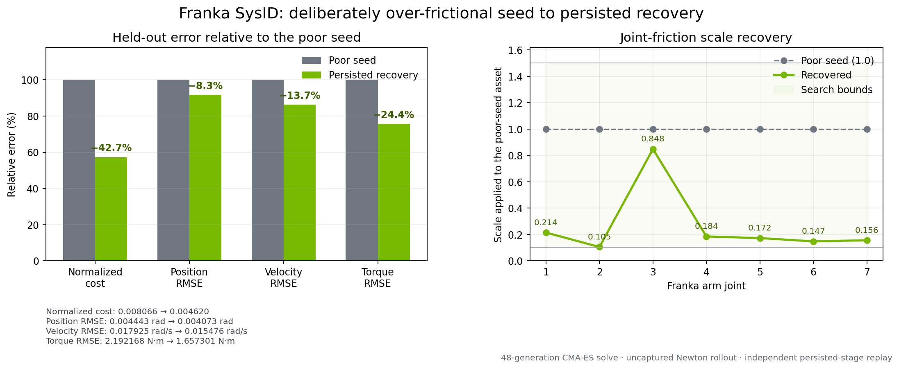
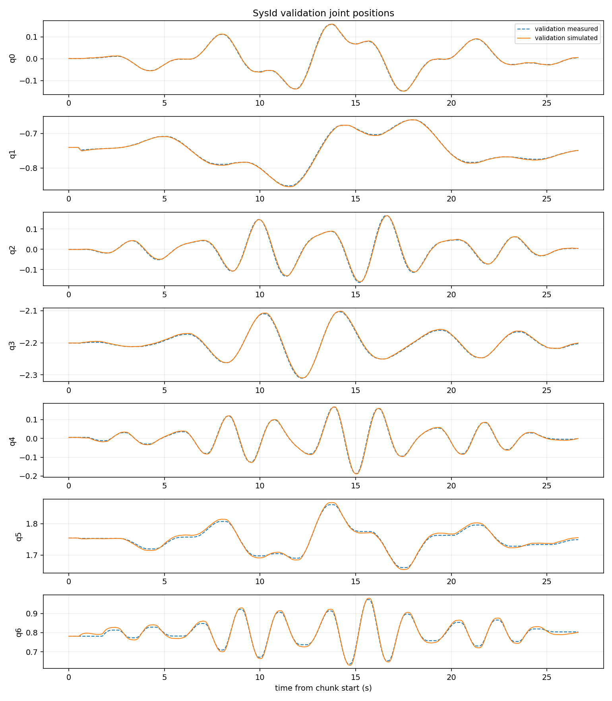
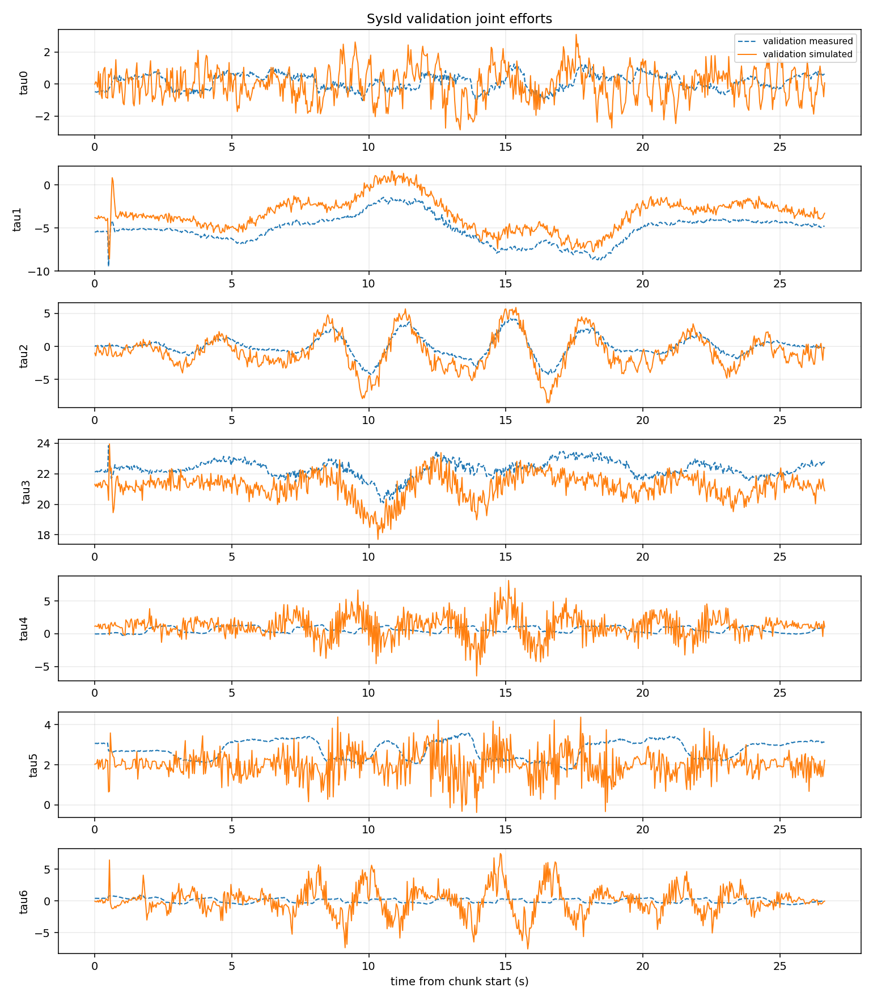
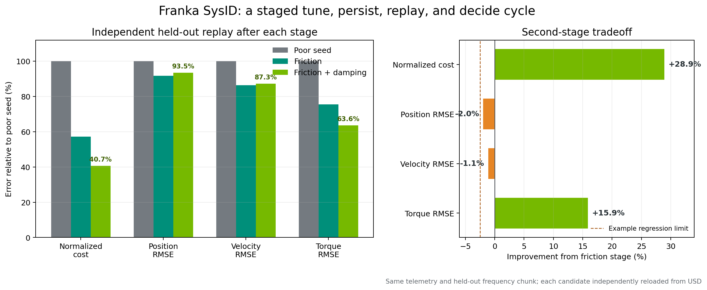

教程 14：Franka 系统辨识#
注意
System Identification 扩展目前处于 Beta 阶段。其工作流程、运行契约、导出的运行规范以及 API 不保证未来兼容性。
本教程针对固定基座 Franka Panda 执行一个可复现的自由空间系统辨识实验。为了使优化行为可见，教程从一个故意设置过高摩擦的工作资产开始。源资产保持不变；仅对单独的教程覆盖层进行降级处理。在恢复关节摩擦后，教程将诊断剩余的留出集残差，并运行一个单独限界的关节阻尼阶段。每个阶段都从之前持久化的候选模型开始，并且必须通过其自身的重放门控。
该示例使用记录的 MCAP 遥测数据、显式命令对齐、独立的训练和验证动作、未捕获的 Newton MuJoCo 展开（rollouts）以及 CMA-ES。优化、USD 修改、重放和提升（promotion）保持为独立操作，以便每个阶段都可审查且可逆。

本演练遵循相同的进程：左侧为参考激励和遥测数据，橙色为故意设置的较差初始模型，绿色为恢复后的候选模型。#
完成本教程后，您将能够：
在不修改源资产的情况下构建受控的较差初始化。
验证遥测映射、时序、激励和力矩语义。
配置并导出一个限界的仅摩擦 RunSpec。
求解、持久化并独立重放一个参数阶段。
诊断留出集残差并配置保守的第二阶段。
使用预先声明的接受策略比较候选方案。
决定何时提升候选方案以及何时收集新的激励数据。
解读预测性能的提升，同时避免夸大物理可辨识性。
有关完整的功能参考，请参阅 System Identification Extension。
35-50 分钟教程，不包括优化时间
参考结果#
本教程在拟合之前，故意在一个可用的覆盖层中将所有七个手臂关节的摩擦值加倍。 独立重新加载的摩擦候选方案将留出集归一化成本降低了 42.7%。位置、 速度和扭矩 RMSE 分别改善了 8.3%、13.7% 和 24.4%。
第二阶段仅开放七个关节阻尼比例。其独立重新加载的候选方案将扭矩 RMSE 从 1.6573 N*m 降低到 1.3946 N*m，归一化成本又降低了 28.9%。相对于摩擦候选方案，位置和速度 RMSE 略有回归，分别增加了 2.0% 和 1.1%，但仍优于较差的初始种子。 因此，最终决策展示了一种明确的应用权衡，而不是在未审查的情况下选择最低标量目标。
这是一种压力测试初始化，并非推荐的工程先验。它演示了从一个明显较差的模型开始的阶段性调优 循环，同时保持每个实验的稳定性和可审查性。
先决条件#
已构建的 NVIDIA Isaac Sim 源代码检出。
启用
isaacsim.robot_setup.sysid.ui。打开 Window > Extensions，搜索 system identification，并启用isaacsim.robot_setup.sysid.ui。交互式扩展 会自动启用isaacsim.robot_setup.sysid后端。来自 Content Browser 的打包 Franka 教程位于
IsaacSim/Samples/SystemIdentification/franka_sysid_tutorial/。请使用以下确切路径：Stage：
assets/franka_poor_seed.usda。RunSpec：
config/franka_friction_run_spec.json。MCAP 录制：
data/bag_0.mcap。Topic 映射：
data/franka_sysid_topic_map.yaml。Collection 清单：
data/collection_manifest.json。参考结果：
results/franka_friction_result.json。
固定基座 stage 的关节结构解析为
/World/envs/env_0/panda_instanceable。用于 Newton MuJoCo 群体滚动的支持 CUDA 的 GPU。
用于存放 RunSpecs、报告、检查点和输出 USD 的本地工作目录。当无头命令 需要文件系统路径时，请复制完整的
franka_sysid_tutorial目录并保留其打包的 子目录结构。RunSpec 会相对于其在config/下的位置解析../assets、../data和../results。 请将可写输出保留在本地，且不要修改 Samples 原始文件。
参考录制包含 9,439 个样本，涵盖七个手臂关节，频率约为 30 Hz。它提供了 关节位置、速度、指令以及连杆侧扭矩数据。
重要
System Identification 消耗激励数据；它不会生成或认证安全的机器人指令。 在硬件上执行轨迹之前，请验证关节、速度、加速度、力矩、碰撞和工作空间限制。 有关外部实验设计资源，请参阅 轨迹生成与激励。
步骤 1：创建一个故意设置不佳的工作资产#
将完整的 IsaacSim/Samples/SystemIdentification/franka_sysid_tutorial/ 目录复制到本地工作目录（例如 C:\sysid_tutorial\），然后打开 assets/franka_poor_seed.usda。或者，打开 assets/franka.usda，确认关节结构初始化成功，并保存一个包含以下过高摩擦值的独立本地覆盖层。请勿编辑 Samples 原始文件。
标称教程覆盖文件在每个手臂关节上使用了 0.5 N*m*s/rad 的物理摩擦。对于此实验，将七个工作副本中的每个值设置为 1.0 N*m*s/rad。保持刚度、阻尼、电枢、质量、惯量和控制器设置不变。这将注入的误差隔离到将被优化的参数族中。
属性 |
标称教程覆盖文件 |
不佳工作覆盖文件 |
|---|---|---|
关节 1-7 物理摩擦 |
0.5 N*m*s/rad |
1.0 N*m*s/rad |
其他物理属性 |
保持不变 |
保持不变 |
不佳种子在数值上保持稳定，但其过大的摩擦会导致可测量的轨迹和力矩不匹配。这种受控构建优于同时更改多个耦合族，因为初始误差的原因已知。
警告
0.5 N*m*s/rad 的标称值是教程种子值，并非物理 Franka 的真实测量值。恢复的结果被评估为针对此录制的更好预测模型，而非真实关节摩擦的证明。
步骤 2：加载并验证遥测数据#
启用 isaacsim.robot_setup.sysid.ui 后，打开 Tools > Robotics > Asset Editors >
System Identification。在 Data 中：
选择
/World/envs/env_0/panda_instanceable。选择 MCAP，并从打包的 Franka 教程中选择
data/bag_0.mcap。选择
data/franka_sysid_topic_map.yaml作为主题映射。选择
data/collection_manifest.json作为集合清单。点击 Load Trajectory。
确认有 9,439 个样本、七个关节、约 30 Hz 的频率以及预期的信号通道。
确认力矩映射明确声明了
torque_semantics: link_side。
力矩语义字段很重要，因为电机侧、连杆侧、指令和测量力矩不可互换。此外，还需验证关节顺序、符号、单位、时间戳间隙、削波和长时间平坦区间。

在配置求解之前，请一起查看轨迹预览、分块表和质量摘要。#
步骤 3：校正记录对齐#
遥测诊断估计指令与测量响应之间的公共时间偏移。参考记录产生：
诊断项 |
值 |
|---|---|
公共滞后 |
16.0825 个样本 |
公共滞后 |
0.536075 s |
关节间残差分布 |
0.5336 个样本 |
将 telemetry.command_alignment_seconds 设置为 0.5360748729665944，并在此阶段禁用执行器指令延迟参数。
指令对齐在拟合之前校正记录的序列。执行器指令延迟会改变仿真模型。对同一日志偏移同时应用两者会导致重复计算该效应。
步骤 4：分离训练集和验证集#
禁用 Auto split 并保留两个不重叠的运动：
数据块 |
角色 |
激励 |
持续时间 |
|---|---|---|---|
|
训练 |
正弦 |
23.721 s |
|
验证 |
正弦 |
27.374 s |
训练多正弦信号参与优化器计算。验证多正弦信号不参与优化， 用于模型选择和最终回放。两种运动均驱动所有七个关节，但并不 保证每个选定的物理参数都是独立可辨识的。
步骤 5：配置推演#
使用以下 Newton 设置：
设置 |
参考值 |
|---|---|
仿真引擎 |
牛顿 |
Newton 求解器 |
MuJoCo |
机器人 Prim |
|
设备 |
|
控制器 |
|
前馈 |
|
力矩限制 |
|
离线步进 |
启用 |
CUDA 图捕获 |
启用（默认） |
Newton MuJoCo 支持批处理、无导数的种群评估。可微分的 Newton Featherstone 推演是一条独立的仅无头模式路径，支持的参数集较窄；本 CMA-ES 演练不使用该路径。
对于重复的、固定形状的 CMA-ES 评估，请保持 CUDA 图捕获启用。首次评估会预热 内核和求解器存储，下一次捕获该形状，后续评估则复用该图。每次捕获和未捕获的 MuJoCo 推演 在恢复初始关节状态之前，都会重置推演局部的热启动、执行器激活、施加力 和控制缓冲区，因此前一个候选批次不会为下一个批次提供种子。
在包含 16 个候选项和 800 步的参考 Franka 运行中，图重放将中位评估时间从未捕获时的 13.59 秒降低到捕获后的 0.515 秒，预热后实现了 26.4 倍的加速。该比率特定于该工作负载和硬件。对于新的阶段或 RunSpec，请使用声明的数值容差比较捕获结果与未捕获结果。预期会出现微小的 GPU 浮点差异；如果差异超过接受阈值，请禁用捕获，而不是要求位级相等。
步骤 6：选择并检查参数阶段#
选择七个关节摩擦缩放参数：
族 |
数量 |
初始值 |
最小值 |
最大值 |
|---|---|---|---|---|
关节摩擦 |
7 |
1.0 |
0.1 |
1.5 |
缩放值 1.0 代表在步骤 1 中故意设置的较差属性 1.0 N*m*s/rad。因此，在此工作资产上，边界对应于 0.1-1.5 N*m*s/rad。
点击 Run Check 并阅读当前报告。参考仅摩擦回归器的秩为 7，条件数为 1.024。所有七行都是可识别的。使用上述边界，四个解析种子在边界内，三个保持不变，因为其无约束估计值超出了配置范围。诸如 7 selected 这样的计数不是可识别性结果；请使用每个参数的灵敏度、秩、条件数和判定结果。
不要仅仅因为 UI 允许就在第一阶段添加刚度、阻尼或电枢。添加耦合族会使较大的数值改进更难解释，并且不再与步骤 1 中引入的受控误差相匹配。只有在摩擦候选项已持久化、重放并被接受为其自身的基线后，后续的阻尼阶段才会开始。
步骤 7：配置和导出#
在 Solve 中，使用：
设置 |
参考值 |
|---|---|
优化器 |
CMA-ES |
最大迭代次数 |
48 |
种群和批量大小 |
16 |
Sigma |
0.2 |
种子 |
20260730 |
最大展开步数 |
800 |
位置权重 |
1.0 |
速度权重 |
1.0 |
扭矩权重 |
0.01 |
将 franka_friction_run_spec.json 导出到本地工作目录。检查每个输入路径、输出路径、边界和写回标志。将输入路径指向 franka_sysid_tutorial/assets/franka_poor_seed.usda、franka_sysid_tutorial/data/bag_0.mcap、franka_sysid_tutorial/data/franka_sysid_topic_map.yaml 和 franka_sysid_tutorial/data/collection_manifest.json 的本地副本。保持输出路径为本地路径。将导出的文件与其主题映射、集合清单、源修订版本和输入哈希一起存储。
步骤 8：建立劣质种子基线#
在优化之前运行分析器。以下示例使用 C:\sysid_tutorial 作为本地工作目录，其中包含 Samples 输入的副本以及可写的 RunSpecs、报告和候选 USD：
.\_build\windows-x86_64\release\python.bat `
source\extensions\isaacsim.robot_setup.sysid\tools\headless_sysid_analyze.py `
--run-spec C:\sysid_tutorial\franka_friction_run_spec.json `
--stage C:\sysid_tutorial\franka_poor_seed.usda `
--result-json C:\sysid_tutorial\poor_seed_baseline.json `
--mode baseline
对齐的保留基线为：
指标 |
值 |
|---|---|
归一化成本 |
0.008066 |
位置 RMSE |
0.004443 rad |
速度 RMSE |
0.017925 rad/s |
扭矩 RMSE |
2.1922 N*m |
保持此报告不变。如果没有相同阶段、相同 RunSpec 的基线，求解后的值无法确立改进。
步骤 9：求解，然后应用到新的 USD#
运行导出的规范，不执行写回：
.\_build\windows-x86_64\release\python.bat `
source\extensions\isaacsim.robot_setup.sysid\tools\headless_sysid_solve.py `
--run-spec C:\sysid_tutorial\franka_friction_run_spec.json `
--result-json C:\sysid_tutorial\franka_friction_result.json `
--checkpoint-json C:\sysid_tutorial\franka_friction_checkpoint.json
选定的候选项是第 47 次迭代中最后被接受的候选项。请审查 selected_status，而不是假设最后一次尝试生成的候选项已被接受。选定的缩放比例为：
关节 |
初始缩放 |
恢复的缩放比例 |
边界状态 |
|---|---|---|---|
关节 1 |
1.000 |
0.214 |
内部 |
关节 2 |
1.000 |
0.105 |
内部 |
关节 3 |
1.000 |
0.848 |
内部 |
关节 4 |
1.000 |
0.184 |
内部 |
关节 5 |
1.000 |
0.172 |
内部 |
关节 6 |
1.000 |
0.147 |
内部 |
关节 7 |
1.000 |
0.156 |
内部 |
没有选定的值被归类为命中边界。关节 2 接近下界，因此在对其值进行物理解释之前，扩展搜索范围将是一项有用的敏感性研究。
将选定的向量写入新的阶段：
.\_build\windows-x86_64\release\python.bat `
source\extensions\isaacsim.robot_setup.sysid\tools\headless_sysid_apply_theta_to_stage.py `
--run-spec C:\sysid_tutorial\franka_friction_run_spec.json `
--result-json C:\sysid_tutorial\franka_friction_result.json `
--stage C:\sysid_tutorial\franka_poor_seed.usda `
--output-stage C:\sysid_tutorial\franka_friction_candidate.usda `
--summary-json C:\sysid_tutorial\franka_friction_apply_summary.json
这使得优化、资产变更和接受过程可以分别进行审查。
步骤 10：重新加载并比较留出集指标#
在一个新进程中重新加载持久化的候选项，并运行空操作基线分析：
.\_build\windows-x86_64\release\python.bat `
source\extensions\isaacsim.robot_setup.sysid\tools\headless_sysid_analyze.py `
--run-spec C:\sysid_tutorial\franka_friction_run_spec.json `
--stage C:\sysid_tutorial\franka_friction_candidate.usda `
--result-json C:\sysid_tutorial\franka_candidate_replay.json `
--mode baseline
独立重新加载的候选项产生了以下结果：
留出集指标 |
较差种子 |
持久化候选项 |
变更 |
|---|---|---|---|
归一化成本 |
0.008066 |
0.004620 |
降低 42.7% |
位置 RMSE |
0.004443 rad |
0.004073 弧度 |
降低 8.3% |
速度 RMSE |
0.017925 rad/s |
0.015476 弧度/秒 |
降低 13.7% |
扭矩 RMSE |
2.1922 N*m |
1.6573 N*m |
降低 24.4% |


左侧面板将每个误差通道按其自身的劣质种子值进行归一化。右侧面板显示了由故意设置过高摩擦的初始化所产生的大规模校正。#
检查时间序列一致性以及聚合值：


持久化的候选模型在所有七个关节上均跟随留出集的位置运动。注意寻找聚合 RMSE 可能掩盖的相位误差、偏差和局部发散。#


力矩 RMSE 显著改善，但在绝对单位上仍高于状态通道 RMSE。残余力矩误差可能包含模型形式、控制器、力矩校准、未建模摩擦以及时间不匹配等因素；仅进行摩擦拟合预计无法消除所有误差。#
步骤 11：诊断残差并声明下一个门槛#
摩擦候选模型通过了第一阶段拟合门槛，因为在结果持久化并重新加载后，归一化代价和所有三个聚合留出通道均有所改善。然而，力矩叠加图仍包含结构化的幅值和偏差误差。调优循环应利用该残差形成一个新的、可测试的阶段，而不是一次性添加所有可用参数。
对于本教程，在运行第二次求解之前定义一个示例性的力矩细化门槛：
要求 |
检查点 |
|---|---|
持久化阶段归一化代价 |
低于摩擦候选模型 |
持久化阶段扭矩 RMSE |
至少比摩擦候选模型低 10% |
位置和速度 RMSE |
不超过摩擦候选模型的 2.5% |
参数边界 |
无选中值触及边界 |
证据来源 |
对新写入 USD 进行全新进程回放 |
这些阈值展示了该机制；在拟合您自己的机器人之前，请定义特定于应用的容差。严格的帕累托策略则会拒绝任何在任何通道上表现变差的候选模型。
复制摩擦 RunSpec 并将其源阶段更改为
franka_friction_candidate.usda。将摩擦条目替换为七个关节阻尼缩放参数：
族 |
数量 |
初始值 |
最小值 |
最大值 |
|---|---|---|---|---|
关节阻尼 |
7 |
1.0 |
0.5 |
1.5 |
保持遥测、数据块、命令对齐、后端、控制器和通道权重不变。使用 CMA-ES，种群大小为 16，迭代 48 次，sigma 为 0.15，种子为 20260731。将新契约导出为
franka_damping_run_spec.json。
在优化之前运行局部敏感性分析：
.\_build\windows-x86_64\release\python.bat `
source\extensions\isaacsim.robot_setup.sysid\tools\headless_sysid_analyze.py `
--run-spec C:\sysid_tutorial\franka_damping_run_spec.json `
--stage C:\sysid_tutorial\franka_friction_candidate.usda `
--result-json C:\sysid_tutorial\damping_baseline_sensitivity.json `
--mode sensitivity
所有七个参考扰动均产生了非低敏感性，且训练/验证梯度符号一致。检查报告还警告，在真实轨迹下，驱动阻尼无法从连杆侧扭矩解析地观测到；优化器通过模拟位置响应来识别它。敏感性支持保守试验，但这并非唯一物理辨识的证明。
步骤 12：求解、持久化并回放阻尼阶段#
运行第二个 RunSpec 而不进行写回：
.\_build\windows-x86_64\release\python.bat `
source\extensions\isaacsim.robot_setup.sysid\tools\headless_sysid_solve.py `
--run-spec C:\sysid_tutorial\franka_damping_run_spec.json `
--result-json C:\sysid_tutorial\franka_damping_result.json `
--checkpoint-json C:\sysid_tutorial\franka_damping_checkpoint.json
参考求解选择了第 33 次迭代中最后接受的候选模型：
关节 |
初始缩放 |
选中缩放 |
边界状态 |
|---|---|---|---|
关节 1 |
1.000 |
1.290 |
内部 |
关节 2 |
1.000 |
0.670 |
内部 |
关节 3 |
1.000 |
0.923 |
内部 |
关节 4 |
1.000 |
0.871 |
内部 |
关节 5 |
1.000 |
0.567 |
内部 |
关节 6 |
1.000 |
0.836 |
内部 |
关节 7 |
1.000 |
0.579 |
内部 |
将选定的向量写入另一个新阶段：
.\_build\windows-x86_64\release\python.bat `
source\extensions\isaacsim.robot_setup.sysid\tools\headless_sysid_apply_theta_to_stage.py `
--run-spec C:\sysid_tutorial\franka_damping_run_spec.json `
--result-json C:\sysid_tutorial\franka_damping_result.json `
--stage C:\sysid_tutorial\franka_friction_candidate.usda `
--output-stage C:\sysid_tutorial\franka_friction_damping_candidate.usda `
--summary-json C:\sysid_tutorial\franka_damping_apply_summary.json
然后在新进程中重新加载已写入的阶段：
.\_build\windows-x86_64\release\python.bat `
source\extensions\isaacsim.robot_setup.sysid\tools\headless_sysid_analyze.py `
--run-spec C:\sysid_tutorial\franka_damping_run_spec.json `
--stage C:\sysid_tutorial\franka_friction_damping_candidate.usda `
--result-json C:\sysid_tutorial\franka_damping_candidate_replay.json `
--mode baseline
使用重放报告作为证据记录。不要使用优化器的进程内验证值进行替代。
步骤 13：比较各阶段并选择候选项#
独立重放生成的各阶段结果如下：
留出集指标 |
较差种子 |
摩擦候选项 |
摩擦+阻尼候选项 |
|---|---|---|---|
归一化成本 |
0.008066 |
0.004620 |
0.003285 |
位置 RMSE |
0.004443 rad |
0.004073 弧度 |
0.004153 弧度 |
速度 RMSE |
0.017925 rad/s |
0.015476 弧度/秒 |
0.015644 弧度/秒 |
扭矩 RMSE |
2.1922 N*m |
1.6573 N*m |
1.3946 N*m |


阻尼阶段降低了总体成本和力矩误差，但相对于仅包含摩擦的候选项，位置和速度略有退化。 所有数值均来自独立持久化阶段的重放。#
相对于摩擦候选项，第二阶段将归一化成本降低了 28.9%，力矩 RMSE 降低了 15.9%。位置和速度 RMSE 分别增加了 2.0% 和 1.1%。它通过了示例性的力矩细化 门槛，但并未严格优于摩擦候选项。
根据步骤 11 中声明的策略进行选择：
对于具有所述状态误差容限的力矩敏感型验证，将摩擦+阻尼 候选项推进至任务级测试。
对于严格的无回退策略或位置优先任务，保留仅摩擦候选项。
保留两个阶段。推进操作绝不需要覆盖先前已接受的结果。
步骤 14：决定是否有理由进行另一参数阶段#
第二阶段报告包含有用的停止证据：
没有阻尼缩放触及边界。
对于所有七个阻尼缩放，参数置信度曲率均无定论。
验证成本仍约为估计噪声底的 8.15 倍。
关节 2 在报告中保留了最大的力矩残差功率。
训练和验证仍然是同一个多正弦记录的两个片段。
不要通过在同一数据上同时打开电枢、连杆质量、质心和惯性来响应。这些参数族可以解释重叠的加速度相关残差。相反，应收集独立设计的运动：用于重力项的慢速或静态配置，用于惯性项的富含加速度的片段，以及一组单独的留出频率。然后，每次针对一个支持的参数族重复相同的循环：
建立持久化阶段基线。
运行检查和局部敏感性分析。
在不写回的情况下求解。
将经过审查的选定状态应用到新的 USD。
在新进程中重放新阶段。
与预先声明的门限进行比较，并保留或拒绝该阶段。
对于独立的已知真值算法和后端检查，请运行 教程 15：使用 Sim-to-Sim 恢复验证系统辨识。该教程使用一个简单的双摆，并将通过 Newton 恢复的模型传输到 NVIDIA Isaac Sim PhysX 阶段。它补充了本录制数据演练；它不会将 Franka 拟合结果转化为已知真值结果。
步骤 15：保留证据并做出决定#
保留：
源文件、劣质种子以及每个候选 USD。
录制数据、主题映射、收集清单以及声明的训练/验证划分。
每个参数阶段导出的一个 RunSpec。
基线、敏感性、结果、检查点、应用摘要以及独立重放报告。
验证图表、验收策略以及任何失败的诊断报告。
源修订版、扩展版本、输入哈希值、GPU、驱动程序以及优化器种子。
所选候选项仅在其求解之前您声明的策略下，才适合进行额外的任务验证。保持源 USD 不变，并且不要将任一教程的结果视为硬件安全或物理参数认证。
总结#
本教程涵盖了：
在不修改源文件的情况下创建受控的过度摩擦工作资产。
声明连杆侧扭矩语义并纠正测得的 0.5361 秒录制偏移。
分离耦合多正弦训练数据和保留的频率内容。
求解并独立重放有界的七摩擦阶段。
在开启第二个参数族之前，诊断已持久化的残差。
求解并独立重放有界的七阻尼阶段。
通过明确的应用权衡比较两个候选方案。
当现有激励不再支持合理的更广泛求解时停止。
将预测拟合质量与物理可辨识性及已知真值验证分离。